What's new in Matplotlib 3.11.0 (Jun 11, 2026)#
For a list of all of the issues and pull requests since the last revision, see the GitHub statistics for 3.11.0 (Jun 11, 2026).
Figure creation / management#
Figures can be attached to and removed from pyplot#
Figures can now be attached to and removed from management through pyplot, which in the background also means a less strict coupling to backends.
In particular, standalone figures (created with the Figure constructor) can now be
registered with the pyplot module by calling plt.figure(fig). This allows showing
them with plt.show() as you would do with any figure created with pyplot factory
functions such as plt.figure() or plt.subplots().
When closing a shown figure window, the related figure is reset to the standalone state,
i.e., it's not visible to pyplot anymore, but if you still hold a reference to it, you
can continue to work with it (e.g. do fig.savefig(), or re-add it to pyplot with
plt.figure(fig) and then show it again).
The following is now possible — though the example is exaggerated to show what's possible. In practice, you'll stick with much simpler versions for better consistency
import matplotlib.pyplot as plt
from matplotlib.figure import Figure
# Create a standalone figure
fig = Figure()
ax = fig.add_subplot()
ax.plot([1, 2, 3], [4, 5, 6])
# Register it with pyplot
plt.figure(fig)
# Modify the figure through pyplot
plt.xlabel("x label")
# Show the figure
plt.show()
# Close the figure window through the GUI
# Continue to work on the figure
fig.savefig("my_figure.png")
ax.set_ylabel("y label")
# Re-register the figure and show it again
plt.figure(fig)
plt.show()
Technical detail
Standalone figures use FigureCanvasBase as canvas. This is replaced by a
backend-dependent subclass when registering with pyplot, and is reset to
FigureCanvasBase when the figure is closed. Figure.savefig uses the current
canvas to save the figure (if possible). Since FigureCanvasBase can not render
the figure, when saving the figure, it will fall back to a suitable canvas subclass,
e.g., FigureCanvasAgg for raster outputs such as PNG.
Any Agg-based backend will create the same file output. However, there may be slight
differences for non-Agg backends; e.g. if you use "GTK4Cairo" as interactive
backend, fig.savefig("file.png") may create a slightly different image depending
on whether the figure is registered with pyplot or not.
In general, you should not store a reference to the canvas, but rather always obtain
it from the figure with fig.canvas. This will return the current canvas, which
is either the original FigureCanvasBase or a backend-dependent subclass,
depending on whether the figure is registered with pyplot or not.
Figure size units#
When creating figures, it is now possible to define figure sizes in centimetres or pixels.
Up to now the figure size is specified via plt.figure(..., figsize=(6, 4)), and the
given numbers are interpreted as inches. It is now possible to add a unit string to the
tuple, i.e. plt.figure(..., figsize=(600, 400, "px")). Supported unit strings are
"in", "cm", or "px".
Partial figsize specification at figure creation#
Figure creation now accepts a single None in figsize. Passing (None, h) uses
the default width from rcParams["figure.figsize"] (default: [6.4, 4.8]), and passing (w, None) uses the default
height. Passing (None, None) is invalid and raises a ValueError.
For example:
plt.rcParams['figure.figsize'] = (14, 11)
fig = plt.figure(figsize=(None, 4)) # Size will be (14, 4)
Subplot parameters are reset in Figure.clear#
When calling Figure.clear() the settings for gridspec.SubplotParams are restored
to the default values.
SubplotParams.to_dict is a new method to get the subplot parameters as a dict, and
SubplotParams.reset resets the parameters to the defaults.
Plotting methods#
Grouped bar charts#
The new method grouped_bar() simplifies the creation of grouped bar charts
significantly. It supports different input data types (lists of datasets, dicts of
datasets, data in 2D arrays, pandas DataFrames), and allows for easy customization of
placement via controllable distances between bars and between bar groups.
categories = ['A', 'B']
datasets = {
'dataset 0': [1, 11],
'dataset 1': [3, 13],
'dataset 2': [5, 15],
}
fig, ax = plt.subplots()
ax.grouped_bar(datasets, tick_labels=categories)
ax.legend()
(Source code, 2x.png, png)
{kind=link}
{kind=link}
{kind=link}
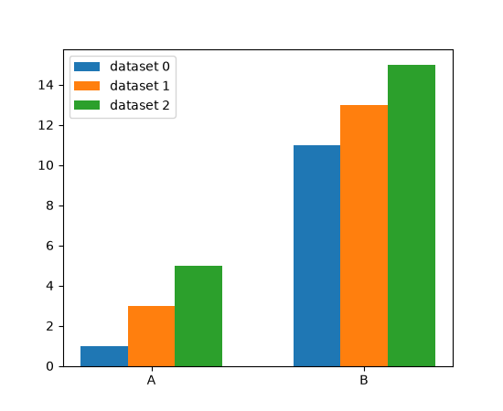
broken_barh() vertical alignment through align parameter#
broken_barh now supports vertical alignment of the bars through the align
parameter.
fig, ax = plt.subplots()
ax.axhline(0, color='tab:red')
ax.broken_barh([(0, 10)], (0, 2)) # Default is 'bottom'.
ax.axhline(10, color='tab:red')
ax.broken_barh([(0, 10)], (10, 2), align='center')
ax.axhline(20, color='tab:red')
ax.broken_barh([(0, 10)], (20, 2), align='top')
(Source code, 2x.png, png)
{kind=link}
{kind=link}
{kind=link}
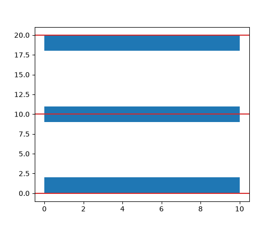
hist() supports a single color for multiple datasets#
It is now possible to pass a single color value to hist(). This value is
applied to all datasets.
Stackplot styling#
stackplot now accepts sequences for the style parameters facecolor,
edgecolor, linestyle, and linewidth, similar to how the hatch parameter is
already handled.
x = np.linspace(0, 10)
y1 = x + np.sin(x)
y2 = x + np.cos(x)
fig, ax = plt.subplots()
ax.stackplot(x, y1, y2, facecolor=['tab:orange', 'tab:green'])
(Source code, 2x.png, png)
{kind=link}
{kind=link}
{kind=link}
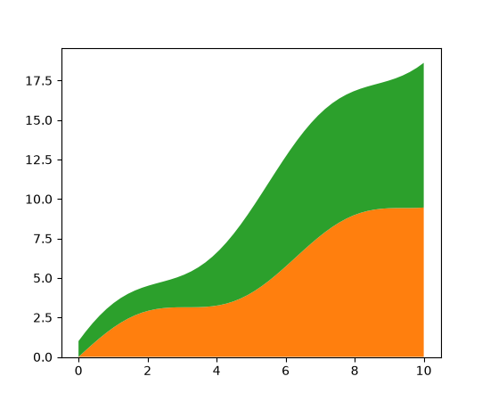
Streamplot integration control#
Two new options have been added to the streamplot method that give better
control of the streamline integration:
integration_max_step_scaleMultiplies the default max step computed by the integrator.
integration_max_error_scaleMultiplies the default max error set by the integrator.
Values for these parameters between zero and one reduce (tighten) the max step or error to improve streamline accuracy by performing more computation. Values greater than one increase (loosen) the max step or error to reduce computation time at the cost of lower streamline accuracy.
The integrator defaults are both hand-tuned values and may not be applicable to all
cases, so this allows customizing the behavior to specific use cases. Modifying only
integration_max_step_scale has proved effective, but it may be useful to control the
error as well.
Multiple arrows on a streamline#
A new num_arrows argument has been added to streamplot that
allows more than one arrow to be added to each streamline:
w = 3
Y, X = np.mgrid[-w:w:100j, -w:w:100j]
U = -1 - X**2 + Y
V = 1 + X - Y**2
fig, ax = plt.subplots()
ax.streamplot(X, Y, U, V, num_arrows=3)
(Source code, 2x.png, png)
{kind=link}
{kind=link}
{kind=link}
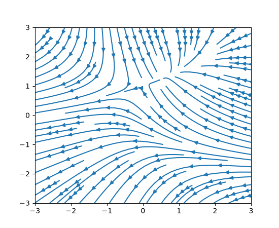
violinplot now accepts color arguments#
violinplot and violin now accept facecolor and linecolor as
input arguments. This means that the color of violinplots can be set as they are made,
rather than setting the color of individual objects afterwards. It is possible to pass a
single color to be used for all violins, or pass a sequence of colors.
np.random.seed(19680801)
data = [sorted(np.random.normal(0, std, 100)) for std in range(1, 5)]
fig, (ax1, ax2) = plt.subplots(nrows=1, ncols=2, sharey=True)
ax1.set_title('Default violin plot')
ax1.set_ylabel('Observed values')
ax1.violinplot(data)
ax2.set_title('Set colors of violins')
ax2.set_ylabel('Observed values')
ax2.violinplot(
data,
facecolor=[('yellow', 0.3), ('blue', 0.3), ('red', 0.3), ('green', 0.3)],
linecolor='black',
)
(Source code, 2x.png, png)
{kind=link}
{kind=link}
{kind=link}
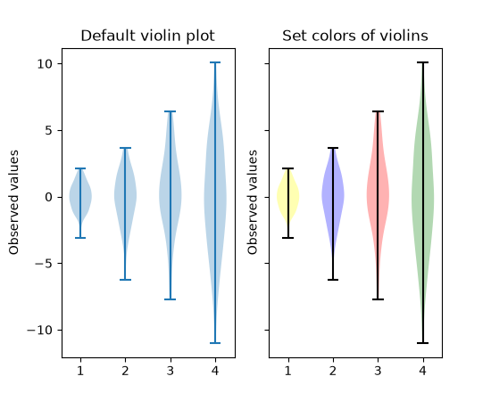
Annotations#
bar_label supports individual padding per label#
bar_label will now accept both a float value or an array-like for padding. The
array-like defines the padding for each label individually.
Adding labels to pie chart wedges#
The new pie_label method adds a label to each wedge in a pie chart created with
pie. It can take
a list of strings, similar to the existing labels parameter of
piea format string similar to the existing autopct parameter of
pieexcept that it uses thestr.formatmethod and it can handle absolute values as well as fractions/percentages
For more examples, see Labeling pie charts.
data = [36, 24, 8, 12]
labels = ['spam', 'eggs', 'bacon', 'sausage']
fig, ax = plt.subplots()
pie = ax.pie(data)
ax.pie_label(pie, labels, distance=1.1)
ax.pie_label(pie, '{frac:.1%}', distance=0.7)
ax.pie_label(pie, '{absval:d}', distance=0.4)
(Source code, 2x.png, png)
{kind=link}
{kind=link}
{kind=link}
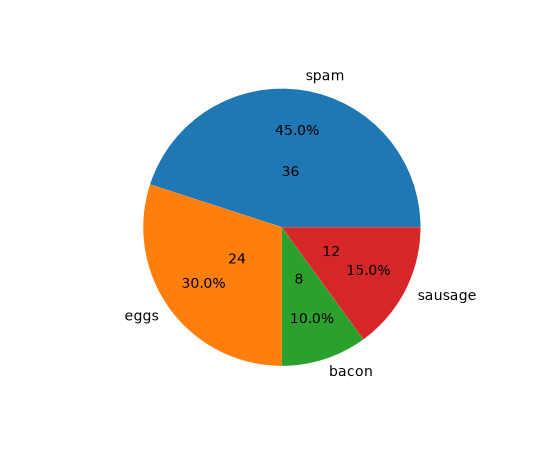
Arrow-style sub-classes of BoxStyle support arrow head resizing#
The new head_width and head_angle parameters to BoxStyle.LArrow,
BoxStyle.RArrow and BoxStyle.DArrow allow for adjustment of the size and aspect
ratio of the arrow heads used.
To give a consistent appearance across all parameter values, the default head position (where the head starts relative to text) is slightly changed compared to the previous hard-coded position.
By using negative angles (or corresponding reflex angles) for head_angle, arrows with 'backwards' heads may be created.
plt.text(0.2, 0.8, "LArrow", ha='center', size=16,
bbox=dict(boxstyle="larrow, pad=0.3, head_angle=150"))
plt.text(0.2, 0.2, "LArrow", ha='center', size=16,
bbox=dict(boxstyle="larrow, pad=0.3, head_width=0.5"))
plt.text(0.5, 0.8, "DArrow", ha='center', size=16,
bbox=dict(boxstyle="darrow, pad=0.3, head_width=3"))
plt.text(0.5, 0.2, "DArrow", ha='center', size=16,
bbox=dict(boxstyle="darrow, pad=0.3, head_width=1, head_angle=60"))
plt.text(0.8, 0.8, "RArrow", ha='center', size=16,
bbox=dict(boxstyle="rarrow, pad=0.3, head_angle=30"))
plt.text(0.8, 0.2, "RArrow", ha='center', size=16,
bbox=dict(boxstyle="rarrow, pad=0.3, head_width=2, head_angle=-90"))
plt.axis("off")
(Source code, 2x.png, png)
{kind=link}
{kind=link}
{kind=link}
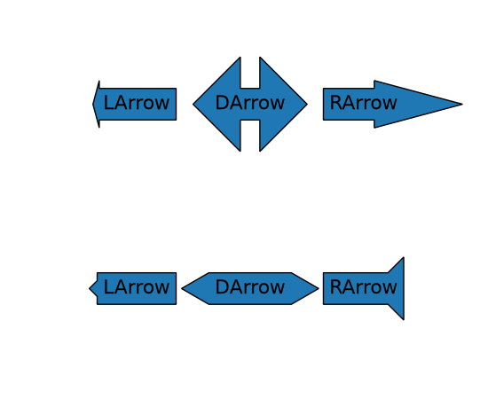
borderpad accepts a tuple for separate x/y padding#
The borderpad parameter used for placing anchored artists (such as inset axes) now
accepts a tuple of (x_pad, y_pad).
This allows for specifying separate padding values for the horizontal and vertical directions, providing finer control over placement. For example, when placing an inset in a corner, one might want horizontal padding to avoid overlapping with the main plot's axis labels, but no vertical padding to keep the inset flush with the plot area edge.
Example usage with inset_axes():
ax_inset = inset_axes(
ax, width="30%", height="30%", loc='upper left',
borderpad=(4, 0))
Axes and Artists#
Twin Axes delta_zorder#
twinx and twiny now accept a
delta_zorder keyword argument, a relative offset added to the original Axes' zorder,
to control whether the twin Axes is drawn in front of, or behind, the original Axes. For
example, pass delta_zorder=-1 to draw a twin Axes behind the main Axes.
In addition, Matplotlib now automatically manages background patch visibility for each
group of twinned Axes so that only the bottom-most Axes in the group has a visible
background patch (respecting frameon).
BarContainer properties#
BarContainer gained new properties to easily access coordinates of the bars:
Maximum levels on log-scaled contour plots are now respected#
When plotting contours with a log norm, passing an integer value to the levels
argument to cap the maximum number of contour levels now works as intended.
edgegapcolor for Patches#
Patch now supports an edgegapcolor parameter, similar to the
existing gapcolor in Line2D. This allows patches with dashed edges to display a
secondary color in the gaps, creating a "striped" edge effect.
This is useful when drawing unfilled patches on backgrounds of unknown color, where alternating edge colors ensure the patch boundary remains visible.
from matplotlib.patches import Rectangle
fig, ax = plt.subplots()
rect = Rectangle((0.1, 0.1), 0.6, 0.6, fill=False,
edgecolor='orange', edgegapcolor='blue',
linestyle='--', linewidth=3)
ax.add_patch(rect)
(Source code, 2x.png, png)
{kind=link}
{kind=link}
{kind=link}
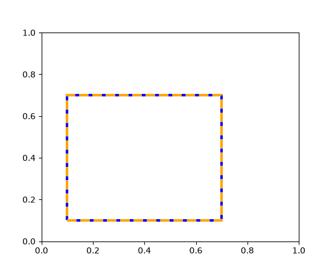
Separated hatchcolor from edgecolor#
When the hatchcolor parameter is specified, it will be used for the hatch. If it is
not specified, it will fall back to using rcParams["hatch.color"] (default: 'edge'). The special value 'edge'
uses the patch edgecolor, with a fallback to rcParams["patch.edgecolor"] (default: 'black') if the patch
edgecolor is 'none'. Previously, hatch colors were the same as edge colors, with a
fallback to rcParams["hatch.color"] (default: 'edge') if the patch did not have an edge color.
import matplotlib as mpl
from matplotlib.patches import Rectangle
fig, ax = plt.subplots()
# In this case, hatchcolor is orange
patch1 = Rectangle((0.1, 0.1), 0.3, 0.3, edgecolor='red', linewidth=2,
hatch='//', hatchcolor='orange')
ax.add_patch(patch1)
# When hatchcolor is not specified, it matches edgecolor
# In this case, hatchcolor is green
patch2 = Rectangle((0.6, 0.1), 0.3, 0.3, edgecolor='green', linewidth=2,
hatch='//', facecolor='none')
ax.add_patch(patch2)
# If both hatchcolor and edgecolor are not specified
# it will default to the 'patch.edgecolor' rcParam, which is black by default
# In this case, hatchcolor is black
patch3 = Rectangle((0.1, 0.6), 0.3, 0.3, hatch='//')
ax.add_patch(patch3)
# When using `hatch.color` in the `rcParams`
# edgecolor will now not overwrite hatchcolor
# In this case, hatchcolor is black
with plt.rc_context({'hatch.color': 'black'}):
patch4 = Rectangle((0.6, 0.6), 0.3, 0.3, edgecolor='blue', linewidth=2,
hatch='//', facecolor='none')
# hatchcolor is black (it uses the `hatch.color` rcParam value)
patch4.set_edgecolor('blue')
# hatchcolor is still black (here, it does not update when edgecolor changes)
ax.add_patch(patch4)
ax.annotate("hatchcolor = 'orange'",
xy=(.5, 1.03), xycoords=patch1, ha='center', va='bottom')
ax.annotate("hatch color unspecified\nedgecolor='green'",
xy=(.5, 1.03), xycoords=patch2, ha='center', va='bottom')
ax.annotate("hatch color unspecified\nusing patch.edgecolor",
xy=(.5, 1.03), xycoords=patch3, ha='center', va='bottom')
ax.annotate("hatch.color='black'",
xy=(.5, 1.03), xycoords=patch4, ha='center', va='bottom')
(Source code, 2x.png, png)
{kind=link}
{kind=link}
![Four Rectangle patches, each displaying the color of hatches in different specifications of edgecolor and hatchcolor. Top left has hatchcolor='black' representing the default value when both hatchcolor and edgecolor are not set, top right has edgecolor='blue' and hatchcolor='black' which remains when the edgecolor is set again, bottom left has edgecolor='red' and hatchcolor='orange' on explicit specification and bottom right has edgecolor='green' and hatchcolor='green' when the hatchcolor is not set.](../../_images/release-prev_whats_new-whats_new_3-11-0-9.2x.png)
For collections, a sequence of colors can be passed to the hatchcolor parameter which will be cycled through for each hatch, similar to facecolor and edgecolor.
Previously, if edgecolor was not specified, the hatch color would fall back to
rcParams["patch.edgecolor"] (default: 'black'), but the alpha value would default to 1.0, regardless of the
alpha value of the collection. This behavior has been changed such that, if both
hatchcolor and edgecolor are not specified, the hatch color will fall back to
'patch.edgecolor' with the alpha value of the collection.
np.random.seed(19680801)
fig, ax = plt.subplots()
x = [29, 36, 41, 25, 32, 70, 62, 58, 66, 80, 58, 68, 62, 37, 48]
y = [82, 76, 48, 53, 62, 70, 84, 68, 55, 75, 29, 25, 12, 17, 20]
colors = ['tab:blue'] * 5 + ['tab:orange'] * 5 + ['tab:green'] * 5
ax.scatter(
x,
y,
s=800,
hatch="xxxx",
hatchcolor=colors,
facecolor="none",
edgecolor="black",
)
(Source code, 2x.png, png)
{kind=link}
{kind=link}
{kind=link}
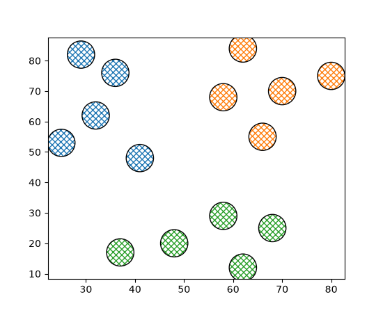
Axis and Ticks#
Standard getters/setters for axis inversion state#
Whether an axis is inverted can now be queried using the axes.Axes getters
get_xinverted/get_yinverted and set using
set_xinverted/set_yinverted.
The previously existing methods (Axes.xaxis_inverted, Axes.invert_xaxis) are now
discouraged (but not deprecated) due to their non-standard naming and behavior.
xtick and ytick rotation modes#
A new feature has been added for handling rotation of xtick and ytick labels more
intuitively. The new rotation modes "xtick"
and "ytick" automatically adjust the alignment of rotated tick labels, so that the text
points towards their anchor point, i.e. ticks. This works for all four sides of the plot
(bottom, top, left, right), reducing the need for manual adjustments when rotating
labels.
fig, (ax1, ax2) = plt.subplots(1, 2, figsize=(7, 3.5), layout='constrained')
pos = range(5)
labels = ['label'] * 5
ax1.set_xticks(pos, labels, rotation=-45, rotation_mode='xtick')
ax1.set_yticks(pos, labels, rotation=45, rotation_mode='ytick')
ax2.xaxis.tick_top()
ax2.set_xticks(pos, labels, rotation=-45, rotation_mode='xtick')
ax2.yaxis.tick_right()
ax2.set_yticks(pos, labels, rotation=45, rotation_mode='ytick')
(Source code, 2x.png, png)
{kind=link}
{kind=link}
{kind=link}
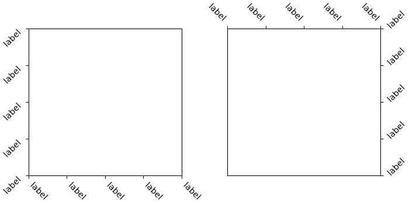
Improved selection of log-scale ticks#
The algorithm for selecting log-scale ticks (on powers of ten) has been improved. In particular, it will now always draw as many ticks as possible (e.g., it will not draw a single tick if it was possible to fit two ticks); if subsampling ticks, it will prefer putting ticks on integer multiples of the subsampling stride (e.g., it prefers putting ticks at 100, 103, 106 rather than 101, 104, 107) if this results in the same number of ticks at the end; and it is now more robust against floating-point calculation errors.
Colors and colormaps#
Okabe-Ito accessible color sequence#
Matplotlib now includes the Okabe-Ito color sequence. Its colors remain distinguishable for common forms of color-vision deficiency and when printed.
For example, to set it as the default colormap for your plots and image-like artists, use:
import matplotlib.pyplot as plt
from cycler import cycler
plt.rcParams['axes.prop_cycle'] = cycler(color='okabe_ito')
plt.rcParams['image.cmap'] = 'okabe_ito'
Or, when creating plots, you can pass it explicitly:
(Source code, 2x.png, png)
{kind=link}
{kind=link}
{kind=link}
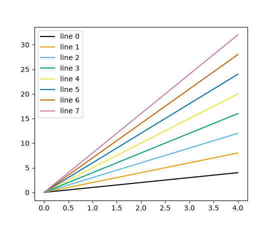
Six and eight color Petroff color cycles#
The six and eight color accessible Petroff color cycles are named 'petroff6' and
'petroff8'. They complement the existing 'petroff10' color cycle, added in
Matplotlib 3.10.0.
For more details see Petroff, M. A.: "Accessible Color Sequences for Data
Visualization". To load the 'petroff6' color
cycle in place of the default:
import matplotlib.pyplot as plt
plt.style.use('petroff6')
(Source code, 2x.png, png)
{kind=link}
{kind=link}
{kind=link}
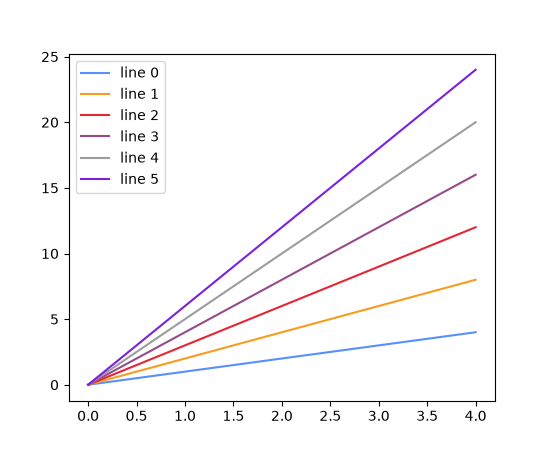
or to load the 'petroff8' color cycle:
import matplotlib.pyplot as plt
plt.style.use('petroff8')
(Source code, 2x.png, png)
{kind=link}
{kind=link}
{kind=link}
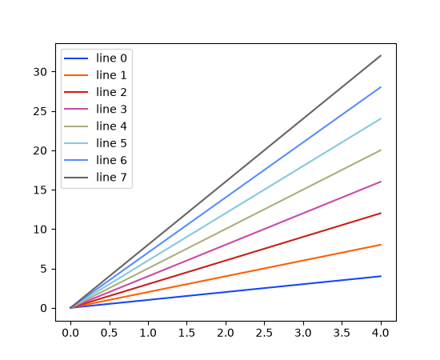
Setting the default color cycle to a named color sequence#
The default color cycle may now be configured in the matplotlibrc file or a style
file to use any of the Named color sequences. For example
axes.prop_cycle : cycler(color='Accent')
Colormaps support giving colors for bad, under and over values on creation#
Colormaps gained keyword arguments bad, under, and over to specify these
values on creation. Previously, these values would have to be set afterwards using one
of set_bad, set_under, set_bad,
set_extremes, with_extremes.
It is recommended to use the new functionality, e.g.:
cmap = ListedColormap(colors, bad="red", under="darkblue", over="purple")
instead of:
cmap = ListedColormap(colors).with_extremes(
bad="red", under="darkblue", over="purple")
or:
cmap = ListedColormap(colors)
cmap.set_bad("red")
cmap.set_under("darkblue")
cmap.set_over("purple")
Tuning transparency of colormaps#
The new method Colormap.with_alpha allows to create a new colormap with the same
color values but a new uniform alpha value. This is handy if you want to modify only the
transparency of mapped colors for an Artist.
Fonts and Text#
Important
This release of Matplotlib includes a large update to text processing and rendering. Within our published wheels, the bundled version of FreeType has been updated, and the rendering pipeline itself has been overhauled to support modern features and fonts, as outlined below. It is unfortunately not possible to reproduce the exact same pixel values for a piece of rendered text as in previous versions.
If you are reliant on pixel-perfect consistency between versions, this will be broken in this release. For downstream packages that are testing plots, we recommend a few options:
Update your test images directly; if you are comfortable with requiring 3.11 and above only, then this is the simplest option. However, it does mean dropping support for many users with older Matplotlib versions. Alternatively, provide two sets of test images, one before and one after. This would increase compatibility at the cost of disk space.
Increase tolerances on tests with text. Note that this might obscure unintended differences, so be careful with increasing tolerances too high. If you are using Matplotlib's
image_comparisondecorator, you can pass the tol argument:@image_comparison(['plot.png'], tol=5, style='mpl20') def test_plot(): ...
If you are using pytest-mpl, then you can pass the tolerance argument:
@pytest.mark.mpl_image_compare(tolerance=5) def test_plot(): ...
Remove non-essential text elements. The easiest way to avoid this problem is to not have any text to worry about. For both the
image_comparisondecorator and pytest-mpl, you can pass the remove_text argument:@image_comparison(['plot.png'], remove_text=True, style='mpl20') def test_plot(): ... @pytest.mark.mpl_image_compare(remove_text=True) def test_plot(): ...
to remove the title and tick texts; note other deliberate texts are not removed.
Replace text with placeholders. If you do need text to exist, but don't intend to check the exact pixels (for example, to confirm layout is correct), then you can replace the text with a placeholder of a fixed size. If you are using pytest, the
text_placeholdersfixture may be used to replace text with a fixed-size box. Consider vendoring a similar fixture in your own tests if necessary.Use a different image comparison algorithm. While not available in Matplotlib's testing framework, a perceptual hashing algorithm may be more appropriate if you wish to avoid depending on exact pixel values.
Complex text layout with libraqm#
Text support has been extended to include complex text layout. This support includes:
Languages that require advanced layout, such as Arabic or Hebrew.
Text that mixes left-to-right and right-to-left languages.
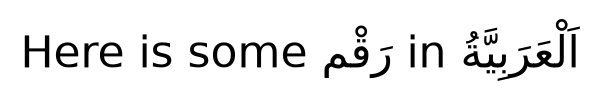
Ligatures that combine several adjacent characters for improved legibility.
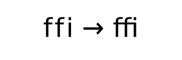
Combining multiple or double-width diacritics.
{kind=link}
{kind=link}
{kind=link}
{kind=link}
{kind=link}
{kind=link}
{kind=link}
{kind=link}
{kind=link}
Note, all advanced features require corresponding font support, and may require additional fonts over the builtin DejaVu Sans.
Specifying font feature tags#
OpenType fonts may support feature tags that specify alternate glyph shapes or substitutions to be made optionally. The text API now supports setting a list of feature tags to be used with the associated font. Feature tags can be set/get with:
matplotlib.text.Text.set_fontfeatures/matplotlib.text.Text.get_fontfeaturesAny API that creates a
Textobject by passing the fontfeatures argument (e.g.,plt.xlabel(..., fontfeatures=...))
Font feature strings are eventually passed to HarfBuzz, and so all string formats supported by hb_feature_from_string() are supported. Note though that subranges are not explicitly supported and behaviour may change in the future.
For example, the default font DejaVu Sans enables Standard Ligatures (the 'liga'
tag) by default, and also provides optional Discretionary Ligatures (the dlig tag.)
These may be toggled with + or -.
fig = plt.figure(figsize=(7, 3))
fig.text(0.5, 0.85, 'Ligatures', fontsize=40, horizontalalignment='center')
# Default has Standard Ligatures (liga).
fig.text(0, 0.6, 'Default: fi ffi fl st', fontsize=40)
# Disable Standard Ligatures with -liga.
fig.text(0, 0.35, 'Disabled: fi ffi fl st', fontsize=40,
fontfeatures=['-liga'])
# Enable Discretionary Ligatures with dlig.
fig.text(0, 0.1, 'Discretionary: fi ffi fl st', fontsize=40,
fontfeatures=['dlig'])
(Source code, 2x.png, png)
{kind=link}
{kind=link}

Available font feature tags may be found at https://learn.microsoft.com/en-us/typography/opentype/spec/featurelist
Specifying text language#
OpenType fonts may support language systems which can be used to select different typographic conventions, e.g., localized variants of letters that share a single Unicode code point, or different default font features. The text API now supports setting a language to be used and may be set/get with:
matplotlib.text.Text.set_language/matplotlib.text.Text.get_languageAny API that creates a
Textobject by passing the language argument (e.g.,plt.xlabel(..., language=...))
The language of the text must be in a format accepted by libraqm, namely a BCP47 language code. If None or unset, then no particular language will be implied, and default font settings will be used.
For example, Matplotlib's default font DejaVu Sans supports language-specific glyphs
in the Serbian and Macedonian languages in the Cyrillic alphabet (vs Russian), or the
Sámi family of languages in the Latin alphabet (vs English).
fig = plt.figure(figsize=(7, 3))
char = '\U00000431'
fig.text(0.5, 0.8, f'\\U{ord(char):08x}', fontsize=40, horizontalalignment='center')
fig.text(0, 0.6, f'Serbian: {char}', fontsize=40, language='sr')
fig.text(1, 0.6, f'Russian: {char}', fontsize=40, language='ru',
horizontalalignment='right')
char = '\U0000014a'
fig.text(0.5, 0.3, f'\\U{ord(char):08x}', fontsize=40, horizontalalignment='center')
fig.text(0, 0.1, f'Inari Sámi: {char}', fontsize=40, language='smn')
fig.text(1, 0.1, f'English: {char}', fontsize=40, language='en',
horizontalalignment='right')
(Source code, 2x.png, png)
{kind=link}
{kind=link}
{kind=link}
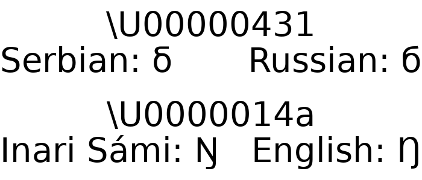
Missing glyphs use Last Resort font#
Most fonts do not have 100% character coverage, and will fall back to a "not found" glyph for characters that are not provided. Often, this glyph will be minimal (e.g., the default DejaVu Sans "not found" glyph is just a rectangle.) Such minimal glyphs provide no context as to the characters that are missing.
Now, missing glyphs will fall back to the Last Resort font produced by the Unicode Consortium. This special-purpose font provides glyphs that represent types of Unicode characters. These glyphs show a representative character from the missing Unicode block, and at larger sizes, more context to help determine which character and font are needed.
To disable this fallback behaviour, set rcParams["font.enable_last_resort"] (default: True) to False.
(Source code, 2x.png, png)
{kind=link}
{kind=link}
{kind=link}
Fonts addressable by all their SFNT family names#
Fonts can now be selected by any of the family names they advertise in the OpenType name table, not just the one FreeType reports as the primary family name.
Some fonts store different family names on different platforms or in different
name-table entries. For example, Ubuntu Light stores "Ubuntu" in the
Macintosh-platform Name ID 1 slot (which FreeType uses as the primary name) and
"Ubuntu Light" in the Microsoft-platform Name ID 1 slot. Previously only the
FreeType-derived name was registered, requiring an obscure weight-based workaround:
# Previously required
matplotlib.rcParams['font.family'] = 'Ubuntu'
matplotlib.rcParams['font.weight'] = 300
All name-table entries that describe a family — Name ID 1 on both platforms, the
Typographic Family (Name ID 16), and the WWS Family (Name ID 21) — are now registered as
separate entries in the FontManager, so any of those names
can be used directly:
matplotlib.rcParams['font.family'] = 'Ubuntu Light'
Support for loading TrueType Collection fonts#
TrueType Collection fonts (commonly found as files with a .ttc extension) are now
supported. Namely, Matplotlib will include these file extensions in its scan for system
fonts, and will add all sub-fonts to its list of available fonts (i.e., the list from
get_font_names).
From most high-level API, this means you should be able to specify the name of any sub-font in a collection just as you would any other font. Note that at this time, there is no way to specify the entire collection with any sort of automated selection of the internal sub-fonts.
In the low-level API, to ensure backwards-compatibility while facilitating this new
support, a FontPath instance (comprised of a font path and a sub-font index, with
behaviour similar to a str) may be passed to the font management API in place of a
simple os.PathLike path. Any font management API that previously returned a string
path now returns a FontPath instance instead.
New environment variable to ignore system fonts#
System fonts may be ignored by setting the MPL_IGNORE_SYSTEM_FONTS; this
suppresses searching for system fonts (in known directories or via some
platform-specific subprocess) as well as limiting the results from
FontManager.findfont.
Mathtext distinguishes italic and normal font#
Matplotlib's lightweight TeX expression parser (usetex=False) now distinguishes
between italic and normal math fonts to closer replicate the behaviour of LaTeX. The
normal math font is selected by default in math environment (unless the rcParam
mathtext.default is overwritten) but can be explicitly set with the new
\mathnormal command. Italic font is selected with \mathit. The main difference
is that italic produces italic digits, whereas normal produces upright digits.
Previously, it was not possible to typeset italic digits. Note that normal now
corresponds to what used to be it, whereas it now renders all characters italic.
Important: In case the default mathematics font is overwritten by setting
mathtext.default: it in matplotlibrc, it must be either commented out or changed
to mathtext.default: normal to preserve its behaviour. Otherwise, all alphanumeric
characters, including digits, are rendered italic.
One difference to traditional LaTeX is that LaTeX further distinguishes between normal
(\mathnormal) and default math, where the default uses roman digits and normal
uses oldstyle digits. This distinction is no longer present with modern LaTeX engines
and unicode-math nor in Matplotlib.
mathtext support for \phantom, \llap, \rlap#
mathtext gained support for the TeX macros \phantom, \llap, and \rlap.
\phantom allows to occupy some space on the canvas as if some text was being
rendered, without actually rendering that text, whereas \llap and \rlap allows
to render some text on the canvas while pretending that it occupies no space.
Altogether these macros allow some finer control of text alignments.
See https://www.tug.org/TUGboat/tb22-4/tb72perlS.pdf for a detailed description of these macros.
For example, using these macros in the first legend below allows reserving space so that it is the same size as the second legend with longer text:
fig = plt.figure(layout="constrained")
sfs = fig.subfigures(2)
ax0 = sfs[0].add_subplot()
ax0.plot([1, 2], label=r"$\rlap{\text{foo}}\phantom{\text{a longer label}}$")
sfs[0].legend(loc="outside right upper")
ax1 = sfs[1].add_subplot()
ax1.plot([1, 2], label="foo")
ax1.plot([2, 1], label="a longer label")
sfs[1].legend(loc="outside right upper")
(Source code, 2x.png, png)
{kind=link}
{kind=link}
{kind=link}
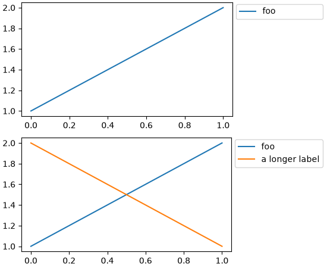
Underlining text while using Mathtext#
Mathtext now supports the \underline command.
plt.figure(figsize=(6, 2))
plt.text(0.05, 0.7, r'This is $\underline{underlined}$ text.', fontsize=24)
plt.text(0.05, 0.2, r'So is $\underline{\mathrm{this}}$.', fontsize=24)
plt.axis('off')
(Source code, 2x.png, png)
{kind=link}
{kind=link}
{kind=link}
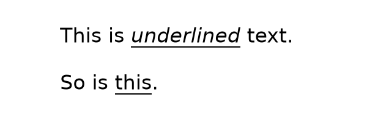
Improved font embedding in PDF#
Both Type 3 and Type 42 fonts (see Fonts in Matplotlib for more details) are now embedded into PDFs without limitation. Fonts may be split into multiple embedded subsets in order to satisfy format limits. Additionally, a corrected Unicode mapping is added for each.
This means that all text should now be selectable and copyable in PDF viewers that support doing so.
When using the usetex feature, Matplotlib calls TeX to render the text and formulas
in the figure. The fonts that get used are usually "Type 1" fonts. They used to be
embedded in full but are now limited to the glyphs that are actually used in the figure.
This reduces the size of the resulting PDF files.
rcParams improvements#
Separate styling options for major/minor grid line in rcParams#
Using rcParams["grid.major.*"] or rcParams["grid.minor.*"] will overwrite the value in rcParams["grid.*"]
for the major and minor gridlines, respectively.
import matplotlib as mpl
# Set visibility for major and minor gridlines
mpl.rcParams["axes.grid"] = True
mpl.rcParams["ytick.minor.visible"] = True
mpl.rcParams["xtick.minor.visible"] = True
mpl.rcParams["axes.grid.which"] = "both"
# Using grid.* to set both major and minor properties
mpl.rcParams["grid.color"] = "lightgrey"
# Overwrite some values for major and minor separately
mpl.rcParams["grid.major.linewidth"] = 1.2
mpl.rcParams["grid.minor.color"] = "tab:blue"
mpl.rcParams["grid.minor.linestyle"] = ":"
plt.plot([0, 1], [0, 1])
(Source code, 2x.png, png)
{kind=link}
{kind=link}
{kind=link}
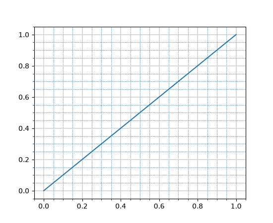
axes.prop_cycle rcParam security improvements#
The axes.prop_cycle rcParam is now parsed in a safer and more restricted manner.
Only literals, cycler() and concat() calls, the operators + and *, and
slicing are allowed. All previously valid cycler strings documented at
https://matplotlib.org/cycler/ are still supported, for example:
axes.prop_cycle : cycler('color', ['r', 'g', 'b']) + cycler('linewidth', [1, 2, 3])
axes.prop_cycle : 2 * cycler('color', 'rgb')
axes.prop_cycle : concat(cycler('color', 'rgb'), cycler('color', 'cmk'))
axes.prop_cycle : cycler('color', 'rgbcmk')[:3]
Legends#
legend.linewidth rcParam and parameter#
A new rcParam legend.linewidth has been added to control the line width of the
legend's box edges. When set to None (the default), it inherits the value from
patch.linewidth. This allows for independent control of the legend frame line width
without affecting other elements.
The Legend constructor also accepts a new linewidth parameter to set the legend
frame line width directly, overriding the rcParam value.
fig, ax = plt.subplots()
ax.plot([1, 2, 3], label='data')
ax.legend(linewidth=2.0) # Thick legend box edge
(Source code, 2x.png, png)
{kind=link}
{kind=link}
{kind=link}
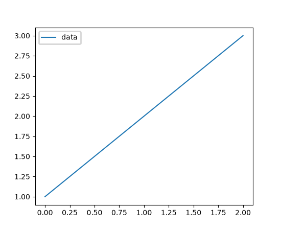
PatchCollection legends now supported#
PatchCollection instances now properly display in legends when given a label.
Previously, labels on PatchCollection objects were ignored by the legend system,
requiring users to create manual legend entries.
import matplotlib.patches as mpatches
from matplotlib.collections import PatchCollection
fig, ax = plt.subplots()
patches = [mpatches.Circle((0, 0.5), 0.1), mpatches.Rectangle((0.5, 0), 0.2, 0.3)]
pc = PatchCollection(patches, facecolor='blue', edgecolor='black', label='My patches')
ax.add_collection(pc)
ax.legend() # Now displays the label "My patches"
(Source code, 2x.png, png)
{kind=link}
{kind=link}
{kind=link}
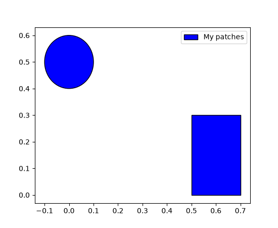
Widgets and Interactivity#
Zooming using mouse wheel#
Control+MouseWheel can be used to zoom in the plot windows. Additionally, x+MouseWheel zooms only the x-axis and y+MouseWheel zooms only the y-axis.
The zoom focusses on the mouse pointer. With Control, the axes aspect ratio is kept; with x or y, only the respective axis is scaled.
Zooming is currently only supported on rectilinear Axes.
Consistent zoom boxes#
Zooming now has a consistent dashed box style across all backends.
{kind=link}
{kind=link}
{kind=link}
Callable valfmt for Slider and RangeSlider#
In addition to the existing %-format string, the valfmt parameter of
Slider and RangeSlider now also accepts a
callable of the form valfmt(val: float) -> str.
WebAgg scroll capture control#
The WebAgg backend now provides the ability to capture scroll events to prevent page
scrolling when interacting with plots. This can be enabled or disabled via the new
FigureCanvasWebAggCore.set_capture_scroll and
FigureCanvasWebAggCore.get_capture_scroll methods.
3D plotting improvements#
Non-linear scales on 3D axes#
Resolving a long-standing issue, 3D axes now support non-linear axis scales such as
'log', 'symlog', 'logit', 'asinh', and custom 'function' scales,
just like 2D axes. Use set_xscale, set_yscale, and
set_zscale to set the scale for each axis independently.
# A sine chirp with increasing frequency and amplitude
x = np.linspace(0, 1, 400) # time
y = 10 ** (2 * x) # frequency, growing exponentially from 1 to 100 Hz
phase = 2 * np.pi * (10 ** (2 * x) - 1) / (2 * np.log(10))
z = np.sin(phase) * x ** 2 * 10 # amplitude, growing quadratically
fig = plt.figure()
ax = fig.add_subplot(projection='3d')
ax.plot(x, y, z)
ax.set_xlabel('Time (linear)')
ax.set_ylabel('Frequency, Hz (log)')
ax.set_zlabel('Amplitude (symlog)')
ax.set_yscale('log')
ax.set_zscale('symlog')
(Source code, 2x.png, png)
{kind=link}
{kind=link}
{kind=link}
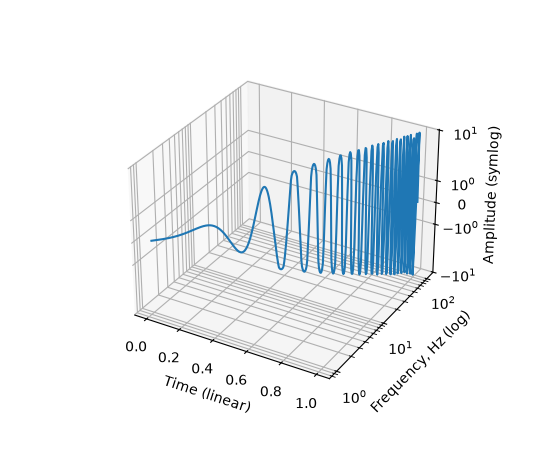
See matplotlib.scale for details on all available scales and their parameters.
Snapping 3D rotation angles with Control key#
Rotation of 3D axes now supports snapping to fixed angular increments when holding the Control key during mouse rotation.
The snap step size is controlled by the new rcParams["axes3d.snap_rotation"] (default: 5.0) rcParam. Setting
it to 0 disables snapping.
For example:
mpl.rcParams["axes3d.snap_rotation"] = 10
will snap elevation, azimuth, and roll angles to multiples of 10 degrees while rotating with the mouse.
3D depth-shading fix#
Previously, a slightly buggy method of estimating the visual "depth" of 3D items could lead to sudden and unexpected changes in transparency as the plot orientation changed.
Now, the behavior has been made smooth and predictable. A new parameter
depthshade_minalpha has also been added to allow users to set the minimum transparency
level. Depth-shading is an option for Patch3DCollection and Path3DCollection,
including 3D scatter plots.
The default values for depthshade and depthshade_minalpha are now controlled by
rcParams["axes3d.depthshade"] (default: True) and rcParams["axes3d.depthshade_minalpha"] (default: 0.3), respectively.
A simple example:
fig = plt.figure()
ax = fig.add_subplot(projection="3d")
X = [i for i in range(10)]
Y = [i for i in range(10)]
Z = [i for i in range(10)]
S = [(i + 1) * 400 for i in range(10)]
ax.scatter(
xs=X, ys=Y, zs=Z, s=S,
depthshade=True,
depthshade_minalpha=0.3,
)
ax.view_init(elev=10, azim=-150, roll=0)
(Source code, 2x.png, png)
{kind=link}
{kind=link}
{kind=link}
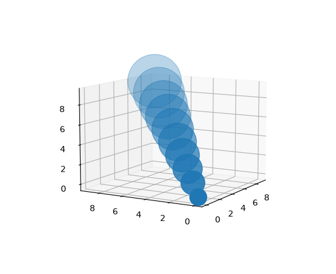
3D performance improvements#
Draw time for 3D plots has been improved, especially for surface and wireframe plots. Users should see up to a 10× speedup in some cases. This should make interacting with 3D plots much more responsive.
Other improvements#
Saving figures as GIF works again#
According to the figure documentation, the savefig method supports the GIF format
with the file extension .gif. However, GIF support had been broken since Matplotlib
2.0.0. It works again.
CallbackRegistry.disconnect allows directly callbacks by function#
CallbackRegistry now allows directly passing a function and optionally signal to
disconnect instead of needing to track the callback ID returned by
connect.
from matplotlib.cbook import CallbackRegistry
def my_callback(event):
print(event)
callbacks = CallbackRegistry()
callbacks.connect('my_signal', my_callback)
# Disconnect by function reference instead of callback ID
callbacks.disconnect('my_signal', my_callback)
violin_stats simpler method parameter#
The method parameter of violin_stats may now be specified as tuple of
strings, and has a new default ("GaussianKDE", "scott"). Calling
violin_stats followed by violin is therefore now equivalent to
calling violinplot.
from matplotlib.cbook import violin_stats
rng = np.random.default_rng(19680801)
data = rng.normal(size=(10, 3))
fig, (ax1, ax2) = plt.subplots(ncols=2, layout='constrained', figsize=(6.4, 3.5))
# Create the violin plot in one step
ax1.violinplot(data)
ax1.set_title('One Step')
# Process the data and then create the violin plot
vstats = violin_stats(data)
ax2.violin(vstats)
ax2.set_title('Two Steps')
(Source code, 2x.png, png)
{kind=link}
{kind=link}
{kind=link}
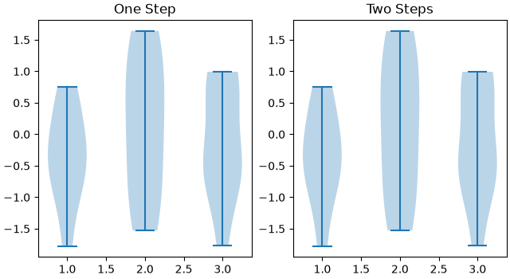